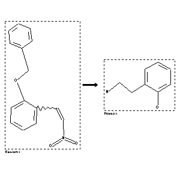

 |
| FA | RX(1); FLST(1); RX(1) |
Reaction (1 of 1)
| Reaction ID | 4440762 |
| Reactant BRN | 7117034 |
| Reactant | 2-(benzyloxy)-b-nitrostyrene |
| Product BRN | 1210320 |
| Product | 2-(2-amino-ethyl)-phenol |
| No. of Reaction Details | 1 |
Reaction Details (1 of 1)
| Reaction Classification | Preparation |
| Reagent | 1.) LAH, 2.) H2 |
| Catalyst | 2.) Pd/C |
| Other Conditions | 1.) THF, room temperature, 3 h, 2.) EtOH, 3.8 atm, 24 h |
| Comment | Yield given. Multistep reaction |
| Citation Pointer | 6004423; Journal; Kita, Yasuyuki; Takada, Takeshi; Ibaraki, Megumi; Gyoten, Michiyo; Mihara, Sachiko; et al.; JOCEAH; J.Org.Chem.; EN; 61; 1; 1996; 223-227; |
Reference (1 of 1)
| Citation Number | 6004423 |
| Document Type | Journal |
| Authors | Kita, Yasuyuki; Takada, Takeshi; Ibaraki, Megumi; Gyoten, Michiyo; Mihara, Sachiko; et al. |
| CODEN | JOCEAH |
| Journal Title | J.Org.Chem. |
| Language Code | EN |
| (Series) Volume | 61 |
| Number | 1 |
| Publication Year | 1996 |
| Page | 223-227 |